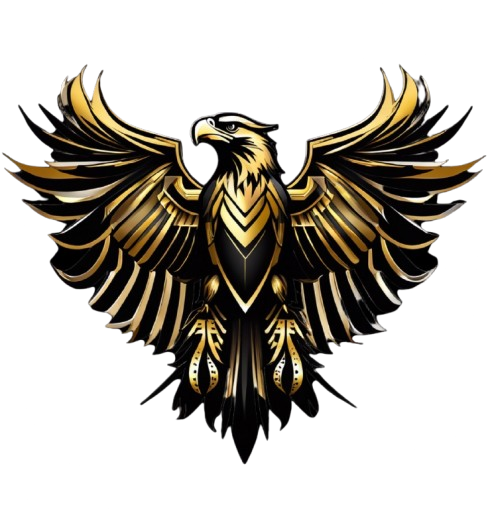
Desde las Sombras
🔊 Audio wird aktiviert
25 Hermanos. Eine Familie. Eine Legende.
Aus dem Verrat geboren. In Blut geschmiedet. Für immer vereint.
Von den Straßen Kolumbiens zu den Schatten der Stadt
Februar 2025. Ein Mann namens Fernando Banderas versammelt 25 verlorene Seelen. Er verspricht ihnen Familie. Schutz. Macht. Er nennt es "Cartel Renacido" – die Wiedergeborenen.
Fünf Monate des Aufbaus. Wir glaubten an Fernando. Wir bauten Strukturen, eroberten Territorien, vergossen Blut für seine Vision. 25 Menschen gaben alles – ihre Zeit, ihr Geld, ihre Loyalität.
Eine schwüle Julinacht. Fernando Banderas verschwindet – mit allem. Die Kasse. Die Kontakte. Die Pläne. Fünf Monate Arbeit, weggewischt in einer Nacht. 25 Menschen sitzen im Dunkeln. Betrogen. Verlassen. Gebrochen.
Die Überlebenden versammeln sich. Gideon Russell steht auf und stellt eine Frage: "Lassen wir uns von diesem Verrat definieren, oder zeigen wir, wer wir wirklich sind?"
Jones Banderas, der Bruder des Verräters, schwört, den Namen seiner Familie neu zu schreiben. 25 Stimmen, eine Antwort: Wir bleiben.
Ein neuer Name wird geboren: La Santa Calavera – Der heilige Totenschädel. Tod und Wiedergeburt vereint in einem Symbol.
Drei Monate harter Arbeit. Unter der Führung von Gideon, Jones und Hailey wächst La Santa Calavera. Neue Strukturen, neue Geschäfte, neue Hoffnung. Alles scheint gut zu laufen.
Jones Banderas. Der Mann, der geschworen hatte, den Namen seiner Familie neu zu schreiben. Der Mann, dem wir vertrauten. Er war doch wie sein Vater.
In einer kalten Novembernacht verschwand er – und mit ihm der letzte Rest Naivität. Blut ist dicker als Wasser? Nicht immer. Manchmal ist Blut nur ein Fluch, der sich weitervererbt.
Aus der Asche des zweiten Verrats erhebt sich La Santa Calavera – stärker als je zuvor. Wir ziehen um. Weg von den alten Schatten, hin zu neuem Land.
La Fuente Blanca – die Weiße Quelle. Eine Pferderanch am Rande der Stadt. Hier beginnen wir von vorne. Aber diesmal wissen wir, wer wir sind. Diesmal vertrauen wir nur noch denen, die es verdient haben.
Zwei Verräter. Zwei Banderas. Beide weg. Und wir? Wir stehen noch. Stärker. Weiser. Unzerbrechlich.
La Fuente Blanca ist mehr als ein Ort – es ist ein Symbol. Ein Symbol dafür, dass wahre Familie nicht durch Blut definiert wird, sondern durch Loyalität.
"Zwei Verräter haben uns nur stärker gemacht.
Fernando Banderas. Jones Banderas. Beide Geschichte.
Wir sind La Santa Calavera. Wir sind die Zukunft."
— El Patrón Gideon Russell, La Fuente Blanca
Unsere Geschäftszweige – Präzision trifft Tradition
La Santa Calavera operiert nicht im Chaos. Jeder Geschäftszweig ist durchdacht, jede Operation dokumentiert, jeder Hermano weiß genau, was zu tun ist. Professionell. Effizient. Unaufhaltsam.
Tourenmanagement & Partnerschaft
Wir haben dem Taxi-Unternehmen ein vollständiges System bereitgestellt. Jede Tour wird erfasst, verfolgt und dokumentiert – in Echtzeit synchronisiert mit unserem Tafelrunden-System, an dem auch unsere Partner aktiv mitarbeiten.
Ein dreistufiges Partnersystem: Wir führen das Listengeschäft, unsere Partner beschaffen die Daten, und Taxi erhält alle Informationen – Tafelrunden-Termine, Abholzeiten, Zuweisung der Fahrer. Jede Abholung wird getrackt, jeder Fahrer bewertet. Drei Ebenen, ein Ziel – perfekte Koordination.
Tafelrunden & Diplomatie
Wir regieren nicht durch Gewalt allein. Die Tafelrunde ist unser diplomatisches Zentrum – hier werden Allianzen geschmiedet, Konflikte gelöst und die Zukunft der Stadt geformt.
Partner & Allianzen
Kein Kartell steht allein. Unsere Partner sind sorgfältig ausgewählt – Händler, Informanten, befreundete Organisationen. Jede Partnerschaft bringt Vorteile für beide Seiten.
Territorium & Feinde
Wer uns verrät, landet auf der Liste. Wer unser Territorium angreift, bereut es. Die Blutliste ist unsere Erinnerung – sie vergisst nie, und wir vergeben selten.
Strategische Übersicht
Unsere interaktive Karte zeigt alles: Sichere Häuser, Operationsgebiete, feindliche Territorien, Treffpunkte. Jeder Hermano hat Zugang – Wissen ist Macht, und bei uns teilen wir diese Macht.
Wöchentliche Abgaben
Jeder Hermano trägt bei. Die wöchentlichen Abgaben finanzieren unsere Operationen, unsere Ausrüstung, unsere Zukunft. Transparent, fair, für alle nachvollziehbar.
Spezialeinheit
Unsere Elite. Die Sicarios sind für die gefährlichsten Aufträge zuständig. Präzise, schnell, lautlos. Wenn sie kommen, ist es bereits zu spät.
🤫 Clasificado
Aufstellung & Anwesenheit
Wir wissen immer, wer wo ist. Anwesenheitslisten, Aufstellungen für Operationen, Abmeldungen – alles dokumentiert. Organisation ist der Schlüssel zum Erfolg.
Jeder dieser Geschäftszweige ist Teil eines größeren Ganzen. Sie greifen ineinander, unterstützen sich gegenseitig, machen uns unaufhaltsam. Das ist der Unterschied zwischen einem Kartell und einer Familie.
Die Säulen unserer Familie
"Ein Hermano verlässt niemals seinen Hermano"
Loyalität ist unser Herzblut. Fernando lehrte uns durch seinen Verrat, wie kostbar echte Treue ist. Heute schwören wir nicht einem Mann Treue – wir schwören einander.
"Unser Wort ist unser Bond"
Was wir versprechen, halten wir. Wen wir beschützen, beschützen wir mit unserem Leben. Unsere Feinde wissen: Ein Versprechen von La Santa – ob Schutz oder Vergeltung – wird eingehalten.
"Respekt wird verdient, nicht verlangt"
Vom Patrón bis zum Novato – jeder hat seine Stimme. Fernando verlangte blinden Gehorsam. Wir verlangen gegenseitigen Respekt.
"Blut bindet stärker als Gold"
Wir sind Familia. Blut ist nicht nur, was wir teilen – es ist, was wir bereit sind füreinander zu vergießen.
Klare Regeln, faire Konsequenzen
Ordnung schafft Stärke
Wir beschützen die Unseren
Nur das Beste ist gut genug
Struktur durch Vertrauen, Macht durch Verdienst
Gideon Russell
Gewählt, nicht ernannt. Letzte Instanz. Schutz aller Hermanos.
Jones Banderas
VERRÄTER – Nov. 2025
VerratenCody Baker
Operaciones – hält die Maschine am Laufen
Hailey Brooke
Seguridad – Der Schatten & Schutz
Mark Sanchez & Jason Diemo
Coordinación – La voz del Patrón
Die Weiße Quelle – Unser neues Zuhause
La Fuente Blanca – die Pferderanch, die unser neues Kapitel einläutet. Nach zwei Verrätern haben wir gelernt: Wahre Stärke kommt nicht von einem Ort, sondern von den Menschen, die dort stehen.
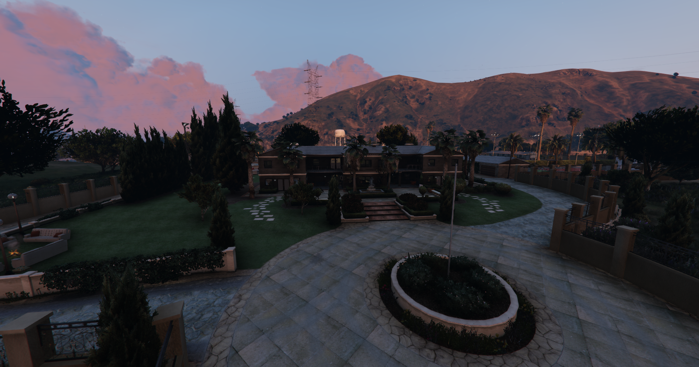
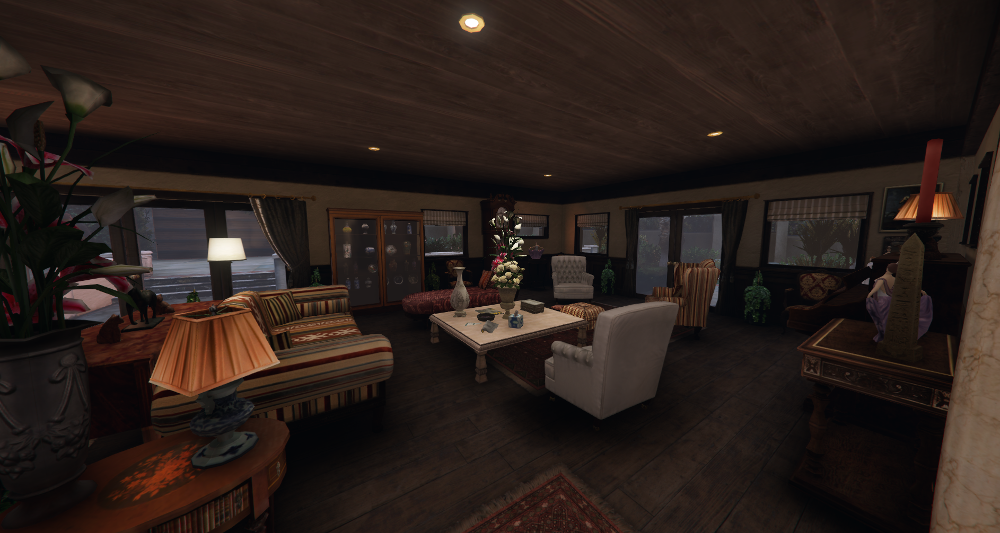
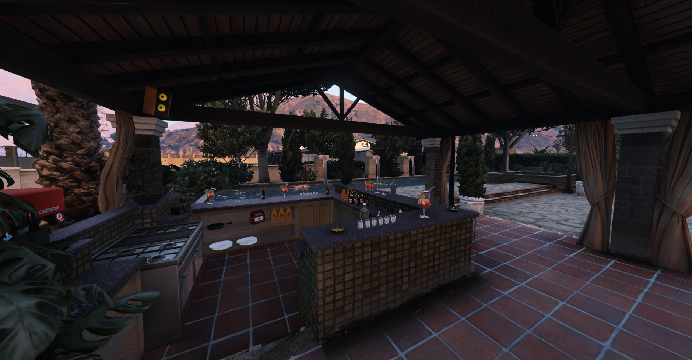
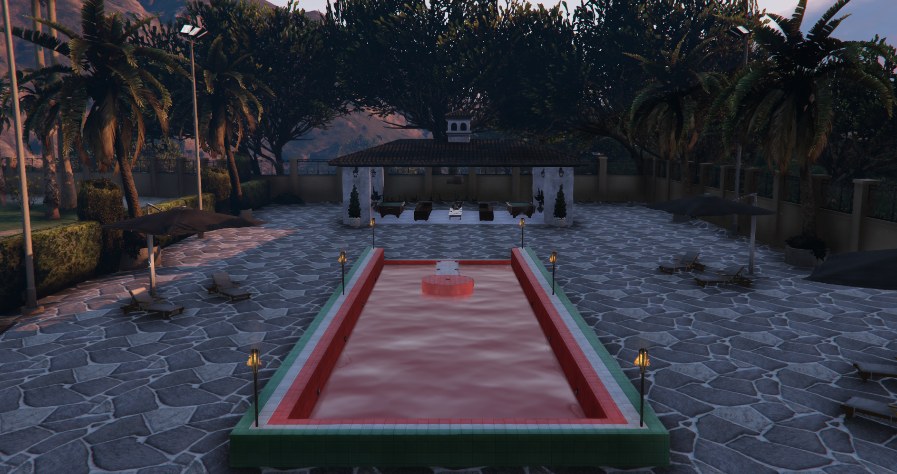
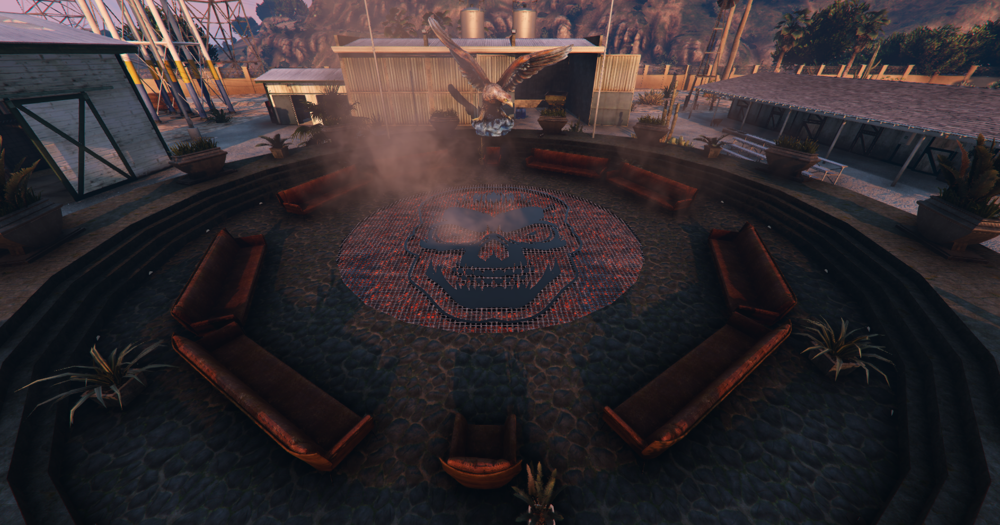
Goldene Akzente auf dunklem Stein. Der erste Eindruck zählt.
Wo Strategien geboren werden und die Führung tagt.
Der soziale Herzschlag der Familia.
Wo unter Sternen Geschäfte gemacht werden.
Der Besprechungskreis – hier werden Entscheidungen getroffen.
Die alte Casa war gut. Aber sie war auch mit Erinnerungen an Verrat behaftet. La Fuente Blanca ist unser Neuanfang – ein Ort, der nur uns gehört. Keine Schatten der Banderas. Keine alten Geister. Nur La Santa Calavera.
"Sie haben gedacht, uns zu brechen. Stattdessen haben sie uns befreit. La Fuente Blanca ist der Beweis: Wir brauchen keine Banderas. Wir sind La Santa Calavera – und wir reiten weiter."
Einheit durch Stil – Identität durch Kleidung
Unsere Kleidung ist mehr als Stoff – sie ist ein Statement. Jeder Hermano trägt die Pflichtkleidung: schwarze Hose mit goldenen Akzenten, die Familia-Weste und bei Operationen die Bandana-Maske. Doch innerhalb dieser Regeln gibt es Raum für persönlichen Stil.
Hermanas haben neben der Pflichtkleidung freie Wahl – solange das Farbschema Schwarz-Gold eingehalten wird.
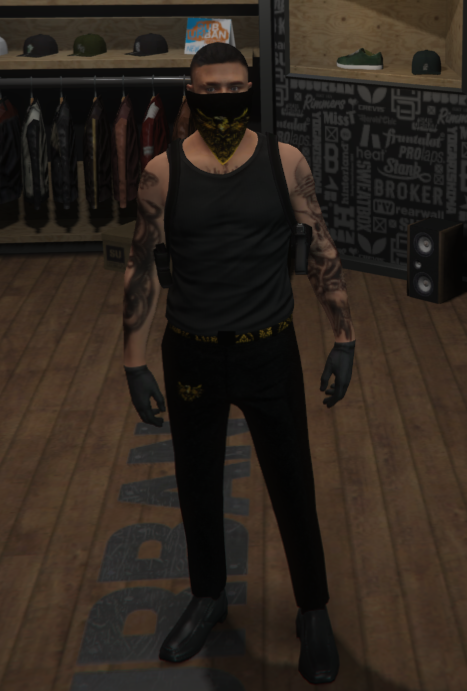
Tank-Top, Bandana, volle Tattoos. Für heiße Tage und schnelle Einsätze – Street-Style mit Familia-Stolz.
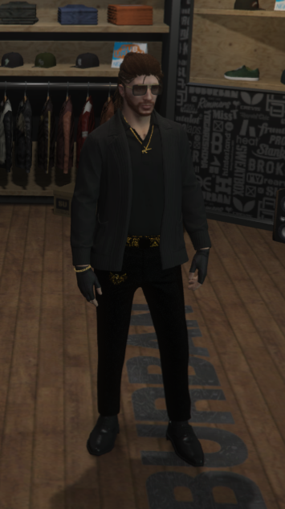
Offener Blazer, goldene Kette, Sonnenbrille. Business-Casual für Verhandlungen und diplomatische Anlässe.
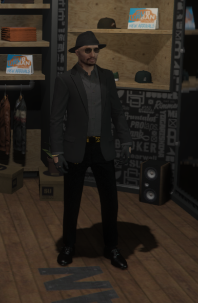
Fedora, Anzug-Blazer, Lederhandschuhe. Der Gentleman-Look für besondere Anlässe – wenn Respekt keine Option ist.
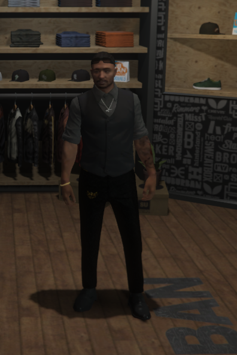
Weste über Hemd, silberne Kette. Der klassische Familia-Look – erkennbar, respektabel, einsatzbereit.
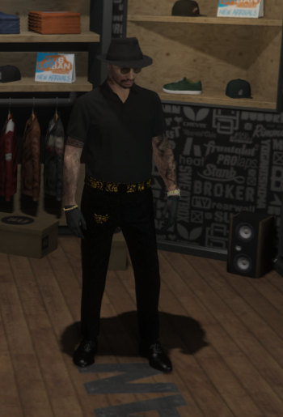
Polo-Shirt, Fedora, entspannte Haltung. Für den Alltag in der Stadt – stilvoll ohne Overdressed.
Zahlen, die eine Geschichte erzählen